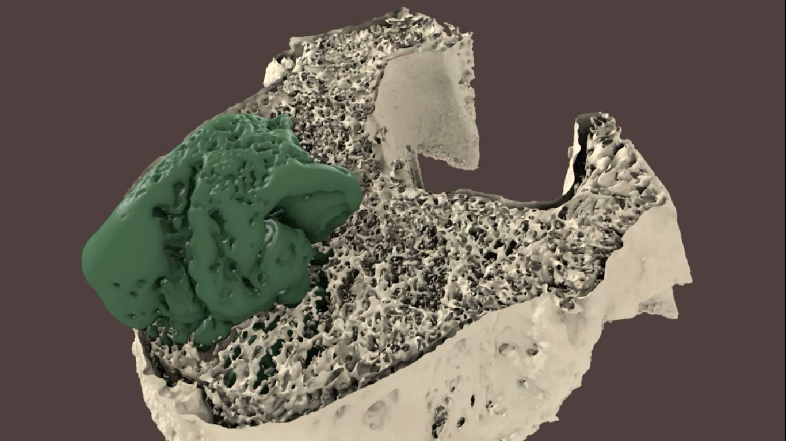
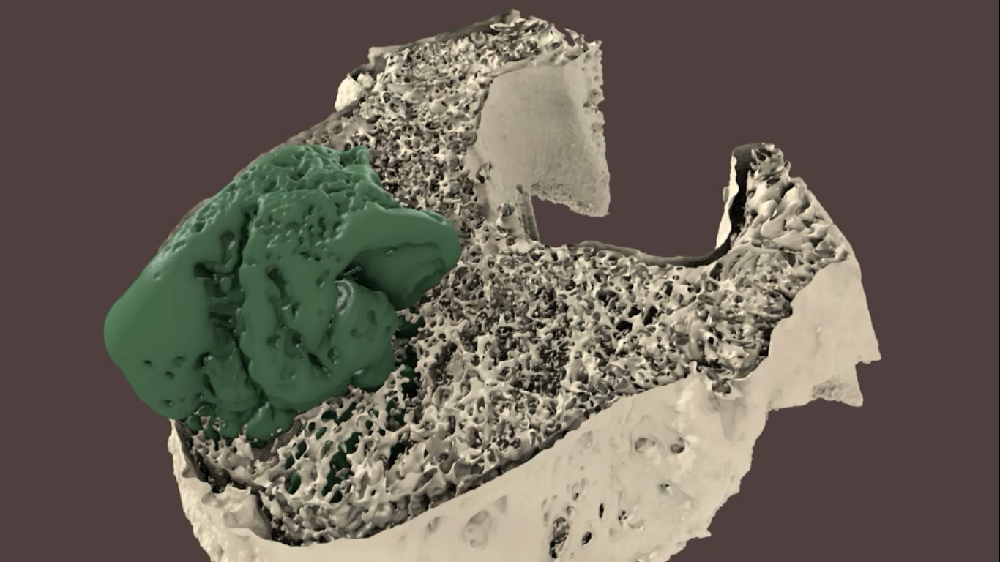
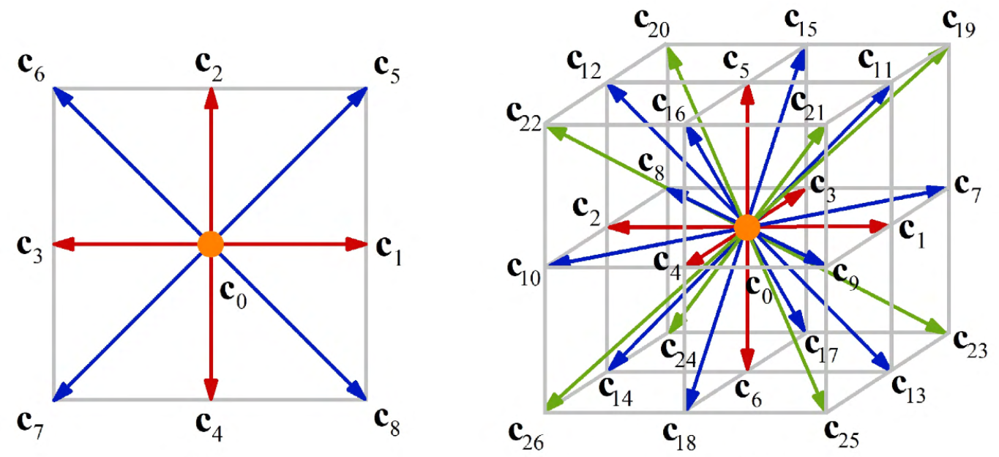

Lattice Boltzmann in the wild
from gas dynamics to complex flows
CFD at different scales
D. Raabe, Modelling Simul. Mater. Sci. Eng., 12 2004
The Setting

Wikipedia
The Boltzmann equation
\[\partial_t f + \boldsymbol{\xi}\cdot\nabla f + \frac{\mathbf{F}}{\rho}\cdot\partial_{\boldsymbol{\xi}}f = \Omega(f) \] Evolution equation of a distribution function $f(\mathbf{x},\boldsymbol{\xi}, t)$ \[ [f] = \frac{kg~s^3}{m^6}\] T. Krüger et al., The Lattice Boltzmann Method: Principles and Practice, 2016Moments
\[\rho(\mathbf{x}, t) = \int f(\mathbf{x},\boldsymbol{\xi}, t) \diff^3\xi \\ \rho\mathbf{u} = \int \boldsymbol{\xi}f(\mathbf{x},\boldsymbol{\xi}, t) \diff^3\xi \\ \rho E = \frac{1}{2}\int |\boldsymbol{\xi}|^2 f(\mathbf{x},\boldsymbol{\xi}, t) \diff^3\xi\]
\[\int \Omega(f) \diff^3\xi = 0 \\ \int \boldsymbol{\xi}\Omega(f) \diff^3\xi = \mathbf{0}\\ \int |\boldsymbol{\xi}|^2 \Omega(f) \diff^3\xi = 0\]
The Collision operator
© S. Harris, sciencecartoonsplus.com
The Collision operator
Dominated by two-body collisions of uncorrelated particles
\[\Omega(f) = -\frac{1}{\tau} (f-f^{eq})\]
with $f^{eq}$ is a Maxwell-Boltzmann distribution
P.L. Bhatnagar, E.P. Gross, M. Krook, Phys. Rev., 93 (3) 1954Hydrodynamic equations
\[\partial_t \int f \diff^3\xi + \int\boldsymbol{\xi}\cdot\nabla f \diff^3\xi + \frac{\mathbf{F}}{\rho}\cdot\int\partial_{\boldsymbol{\xi}}f \diff^3\xi = \int\Omega(f)\diff^3\xi \] which is equal to \[\partial_t\rho + \nabla\cdot(\rho\mathbf{u}) = 0\] and for the first moment \[\partial_t(\rho\mathbf{u}) + \nabla\cdot(\rho\mathbf{u}\mathbf{u}) = \nabla\cdot\hat{\sigma} + \mathbf{F}\] S. Chen, G. D. Doolen, Annu. Rev. Fluid Mech., 30 (1) 1998Chapman-Enskog
Stress tensor $\hat{\sigma}$ depends on $f$, but we don't know $f$ \[f = f_{0} + \varepsilon f_1 + \varepsilon^2 f_2 + O(\varepsilon^3),\quad \partial_t = \varepsilon\partial_{t_1} + \varepsilon^2\partial_{t_2} + O(\varepsilon^3) \] with $f_0 \simeq f^{eq}$ and $\varepsilon \approx Kn \approx \frac{Ma}{Re}$, at zero'th order\[\partial_t(\rho\mathbf{u}) + \nabla\cdot(\rho\mathbf{u}\mathbf{u}) = -\nabla p + \mathbf{F}\ \] at first order we recover Navier-Stokes
S. Chapman, T. G. Cowling, 1990; D. Enskog, 1917
Numerics
\[f^{\star}_i(\mathbf{x}, t) = f_i(\mathbf{x}, t) -\frac{\Delta t}{\tau}(f_i(\mathbf{x}, t) - f^{eq}(\mathbf{x}, t))\] \[f_i(\mathbf{x} + \mathbf{c}_i\Delta t, t + \Delta t ) = f^{\star}_i(\mathbf{x}, t)\] P. O'Brien, A framework for digital watercolor, 2008Implementation
for cycle = 1:maxT
% MACROSCOPIC VARIABLES
rho = sum(fIn);
ux = reshape ( (cx * reshape(fIn,9,lx*ly)), 1,lx,ly) ./rho;
uy = reshape ( (cy * reshape(fIn,9,lx*ly)), 1,lx,ly) ./rho;
% COLLISION STEP
for i=1:9
cu = 3*(cx(i)*ux+cy(i)*uy);
fEq(i,:,:) = rho .* t(i) .* ...
( 1 + cu + 1/2*(cu.*cu) - 3/2*(ux.^2+uy.^2) );
fOut(i,:,:) = fIn(i,:,:) - omega .* (fIn(i,:,:)-fEq(i,:,:));
end
% STREAMING STEP
for i=1:9
fIn(i,:,:) = circshift(fOut(i,:,:), [0,cx(i),cy(i)]);
end
What does it do
© Jousef Murad
Swalbe.jl
“Weeks of coding have saved me hours of thinking.”
\[\partial_t h + \nabla \cdot (h \mathbf{u}) = 0\\ \mathbf{u} \approx \frac{1}{\nu \alpha(h)}\left(-gh \nabla h -\frac{1}{\rho_0}h\nabla p + \mathbf{F}\right) \\ \partial_t h \approx \nabla \cdot \left(\frac{h^3}{3\mu}\nabla p\right)\]
S. Zitz et al., Phys. Rev. E, 100(3) 2019; S. Zitz et al. JOSS, 7(77) 2022Swalbe.jl
Palabos
“The Palabos library is a framework for general-purpose computational fluid dynamics (CFD), with a kernel based on the lattice Boltzmann (LB) method.”
 

Palabos
PowerFlow
“High fidelity transient Lattice Boltzmann based solution, accurate across most flow regimes ...”

PowerFlow
Reasons to love
No meshing
L. W. Chen et al., ACM Trans. Graph., 39(4) 2020
Reasons to love
Simple algorithm with many extensions
Q. F. Zhao et al., Transp. Porous Med., 140 2021, Q. Zhou et al., Interface Focus, 12(6) 2022
Reasons to love
Performance
M. Lehmann et al., Phys. Rev. E, 106(1) 2022
Reasons to avoid
Flow regimes
J. Latt et al., Philos. Trans. R. Soc. A, 378(2175) 2020
Reasons to avoid
Performance
M. Lehmann et al., Phys. Rev. E, 106(1) 2022
Reasons to avoid
Spurious currents: About 17.100 results (0,14 sec)
Conclusion
“If the only tool you have is a hammer, it is tempting to treat everything as if it were a nail.”
- Lattice Boltzmann is a mature CFD tool
- Similar to any other method there are limitations
- Open Source & Commercial
Thank you!
Questions? üßê